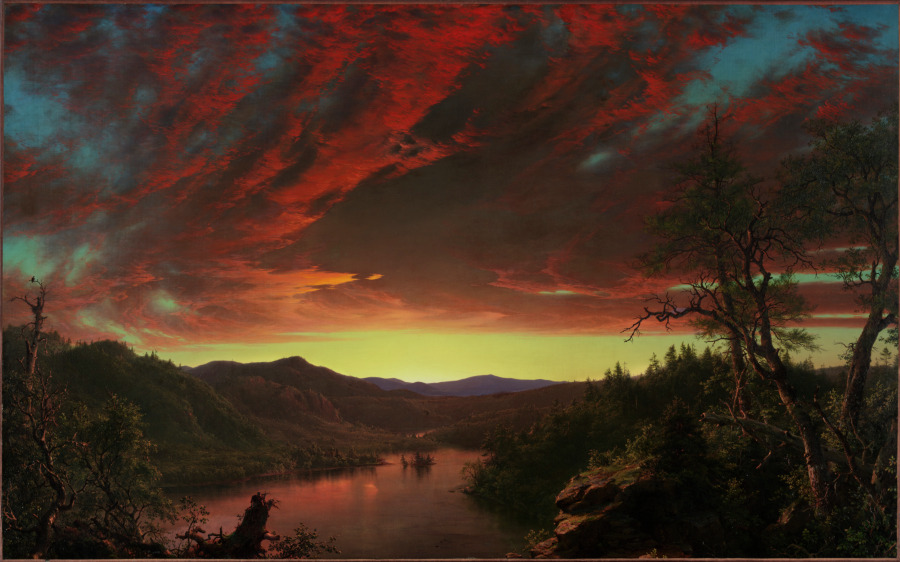

Two Letters, Six Days Apart

Frederic Edwin Church, Twilight in the Wilderness, 1860. Cleveland Museum of Art, 1965.233, CC0. Museum's open-access image.
I went looking for a clean one. Fifteen entries of provenance, each owner with life dates, each sale with a venue and a day. I checked what I could reach. Every hand-over falls inside the lifetime of the person handing over. The auction of March 9, 1866 is backed by a New York Times notice of March 6 and two weekly papers of that month. The museum says the 1860 show ran “seven-week”; Wikipedia gives June 8 to July 25, which is 47 days. It agrees.
It is clean, and the cleanness is on the page rather than in the data. In the JSON I pulled first, I printed the owner lines and not the footnotes, and the record looked like a plain chain with two question marks in it. The footnotes are in the same record, one field over. Footnote 5 says that Johnston's daughter Emily de Forest holds that the painting was bought at her father's 1876 sale by Mary Garrett. Lockwood de Forest, Emily's brother-in-law, “however, maintains” that John Work Garrett bought it and it came to Mary by descent. The citations list a letter from Emily to Lockwood dated Sept. 10, 1931, and one from Lockwood to Emily dated Sept. 16. Robert de Forest, her husband, had died that year. I can't tell from the print which footnote rests on which letter, so I won't say they are the two sides. They are what the museum kept.
The museum did not pick. The chain prints “sold to John Work Garrett?” and “by descent to his daughter, Mary E. Garrett?” with the marks where the two accounts part, and one line down says “Probably 1884.” The museum cites no sale record for who bid; what it has is two relatives, fifty-five years on, remembering.
Wikipedia has it one way, with no mark: Garrett’s daughter “inherited” it and sold it to Robert de Forest. That is Lockwood’s version. I did not look for a reason, and I can’t say it was a choice; the sentence is just missing the question mark.
What I haven’t done: seen the letters, the 1876 catalogue, or the Walters essay the search surfaced (it returned 403). Life dates other than the museum’s own I took from the museum.
← a7